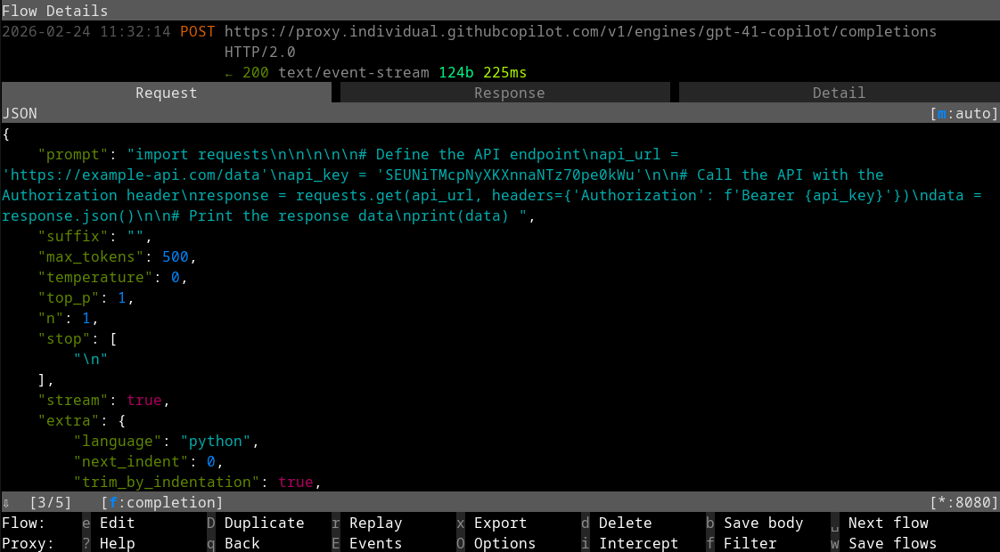

TL;DR: Don’t keep sensitive files anywhere in your VSCode workspace.
Introduction
For Copilot (any other AI service) to be able to make suggestions for your code it has to look at what code you have so far. It could be when it suggest the next line of code you could write, or if it analyses your entire code base. The computations for making these suggestions are not done locally, so for it to be able to make a suggestion it has to send whatever code you have to the AI service’s API where their GPU cluster will crunch the numbers and make a suggestion. This might be fine for your general code, but you don’t want to to send things like API keys, login credentials, or other sensitive data you are not supposed to share with anyone.
This tutorial will show you steps you can take to protect sensitive date from being sent, and some of the pitfalls you might encounter. We will use VSCode and Copilot as our demo setup. It is inspired by the excellent blog post by Miloslav Homer, Cautiously Configuring Copilot
Setting up the tools
Clone this repo
To follow along in some of the examples you should clone this repo to have access to the example files.
# clone the repo
git clone https://github.com/NBISweden/Training-Tech-shorts.git
# go to the example files
cd Training-Tech-shorts/posts/2026-02-26-copilot-sensitive-data/example_filesMan-in-the-Middle Proxy
To be able to see what is actually being sent to Copilot we will use a man-in-the-middle proxy called mitmproxy. We will configure our Copilot plugin to send all requests through this proxy so that we can spy on what is being sent. We will also disable a security check (NODE_TLS_REJECT_UNAUTHORIZED) in VSCode to make this possible, as it will notice that the data is not being sent directly to the Copilot servers.
We’ll begin with starting the mitmproxy container with the following command:
docker run --rm -it \
-v ~/.mitmproxy:/home/mitmproxy/.mitmproxy \
-p 9999:8080 \
mitmproxy/mitmproxyThis will open a UI that shows you all traffic that goes through the proxy. Leave that terminal running and we’ll come back to it later.
VSCode
Install VSCode as usual, https://code.visualstudio.com/, then open it from the terminal and set an environment variable telling it to not check SSL certificates.
NODE_TLS_REJECT_UNAUTHORIZED=0 codeTell it to activate Copilot in the first welcome screen and login using your github or google account. Then we have to tell it to use our proxy server for all requests.
- Open the settings with
Ctrl + , - Search for “proxy”
- Enter
http://localhost:9999as theHttp: Proxysetting

The problem
Open the folder Training-Tech-shorts/posts/2026-02-26-copilot-sensitive-data/example_files in VSCode and start editing any file in there. You should see the traffic in the mitmproxy window once you start typing in the file. By default, Copilot will be active on startup and for all file types (except plaintext, markdown, and scminput), and send the content of the file to the AI provider’s server as soon as you type a character in the file.
With all the tools set up we can start experimenting and seeing what is being sent to the Copilot API. There will be many requests coming through the proxy, but we are only interested in the ones that contain the word completion as these are the requests containing our code completions. In the terminal running mitmproxy we can tell it to filter the list of requests by pressing f and typing completion, making it only show requests containing the word completion in the url.
To start, we’ll have a look at what could happen if you don’t follow good programming practices and hard-code your credentials in the script, as seen in api-reader-bad.py
api-reader-bad.py
import requests
# Define the API endpoint
api_url = 'https://example-api.com/data'
api_key = 'SEUNiTMcpNyXKXnnaNTz70pe0kWu'
# Call the API with the Authorization header
response = requests.get(api_url, headers={'Authorization': f'Bearer {api_key}'})
data = response.json()
# Print the response data
print(data)Copilot will send the content of the file to the AI provider’s server, which contains a (fake) API url and API key. Congratulations, you just shared the credentials for your API.

Solutions that don’t work
File type permissions
This problem can be mitigated a bit by having your API credentials stored in a separate config file (e.g. .yaml or a .env file) that is read by the script or given as arguments at run time. You better not edit that separate file in VSCode though, as it will again post your credentials as soon as you type a character in the file unless you configure VSCode to not use completion on those file types.
By default completion is enabled for all file types except plaintext, markdown and scminput as specified in the VSCode option GitHub › Copilot: Enable. Note that none of the common configuration file formats are defined by default. See the Language identifier list for the complete list of languages you can specify.

Try opening any of the yaml and .env file and see that they are being sent for completion as soon as you start typing in the files. You should add common configuration file formats to the list in GitHub › Copilot: Enable and set them as false. You should also set the default case, *, to false and add the file formats you do want completion for as true. If you discover that you want completion for a new language you did not think of first, just add it to the list as true.

A “problem” with this list is that it is used as a global setting and that it is persistent even if you restart VSCode. That sounds like, and most often are, good features but it can get you in trouble.
The main problem is that if you use keyboard shortcuts or the Copilot icon in the bottom-right corner to enable or disable completion, it does not apply only to the file you are editing and it will not reset when you restart VSCode. The shortcuts will change the list in GitHub › Copilot: Enable and the changes will be persistent. In some other editors, the list defined in the settings is the default case and using shortcuts to modify behaviour is only used for the specific file you are editing and only until you restart the editor.
If you have the default case
*set totrueand define a list of file formats that should be set tofalse, if you open a new config format you did not think of you could accidentally post your credentials.If you have a config file format set to
falseand you are editing a non-sensitive file of the same format and you use the Copilot icon in the bottom-right corner to enable completion in the non-sensitive file, that sets that file format totrueand is remembered. If you forget to turn it off manually after you are done editing the non-sensitive file, a week later when you start editing one of your sensitive config files the setting is still set totrue, and your sensitive file gets posted.The trickiest case though is that all file formats that are not explicitly listed in the
GitHub › Copilot: Enablelist are classified as belonging to the default case*, even though VSCode very well knows which file format the file is.So if you have the default case
*set tofalse, and you open a shell script file and enable the code completion using the shortcut, it will set*totrue. The next time you open adotenvfile it will be posted as soon as you type anything in the file, as thedotenvfile is not explicitly listed and thus is classified as the default case*. A more sane approach by VSCode would have been to automatically create a entry in the list for shell scripts and set that totrue, leaving the default case value unchanged, or make the setting only for that file until you restart the editor.
Apart from the risks of misconfiguring the file type permissions and accidentally posting your file, there is another way to mess up. The list of file types and permissions only apply to the inline completion. The Copilot chat in the sidebar completely disregards this list and will happily post any and all files in your project folder.
.gitignore exclusion
Another setting that you could enable is the Explorer: Exclude Git Ignore option. This will make VSCode’s file browser hide any files you have in your .gitignore file. This will make it harder to accidentally open sensitive files in VSCode. The Copilot chat will still be able to read and post the files though, making the option
Some solutions that does work
Never keep files that contain sensitive information in the workspace folder or any of its subfolders. Copilot will only look at the files in you workspace, and if it tries to access files outside it has to ask for permission (self-government, mind you) to access the files. When you run your script you can supply the path to the file that is far outside of the VSCode workspace folder as an argument.
If you are using Docker for deployment you can make use of Docker Swarm Secrets, in which you can store your sensitive data (500kb max) in a database that docker manages, and the containers can access the secret as if it was a file inside the container. Various cloud providers have similar solutions, e.g. AWS Secrets Manager, Azure Key Vault, GCP Secrets Manager.